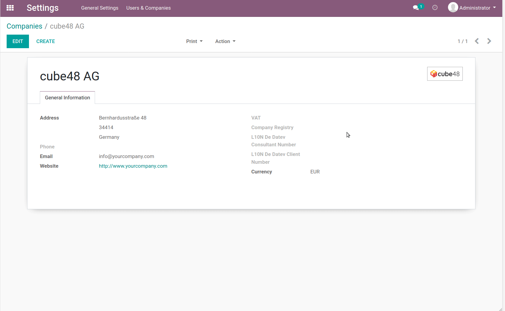

Quick Language Selection
If you have to change your language frequently, you will love it!
This app creates new entries for all active languages in the top right user menu. Select the required one with just one click. Handy for employees of multilingual companies, external users, developers, partners...

This module contains 78 nice flags for all Odoo standard languages. Feel free to ask if you miss your language. Not shown in mobile view.